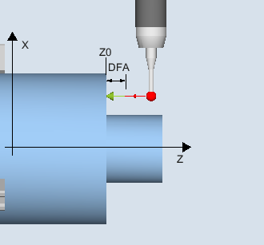

Only applies on turning machines without the milling technology.
With this measuring version, the radius of a workpiece probe with cutting edge positions SL=5 to 8 can be calibrated on a surface. The trigger points of the probe are determined.
The calibration surface is workpiece-related. It is only possible to calibrate in the selected axis and direction, which are perpendicular to this calibration surface.
The determined switching position of the workpiece probe in the parameterized axis and direction, is calculated with the setpoint of the reference surface and from this the corresponding trigger point determined.
If no alarms occur, the trigger values are entered into the selected calibration data set of the workpiece probe.
The probe travels in the measuring direction to the reference surface (e.g. workpiece)
Calibrate: radius at the surface (CYCLE973), example G18, SL=8
The surface must be in parallel to an axis of the workpiece coordinate system (WCS).
The calibration surface must have a low surface roughness.
The workpiece probe is called as tool with tool offset.
580 must be declared as the probe type.
The probe must be positioned opposite to the calibration surface.
The probe (ball radius) is the distance of the measurement path away from the calibration surface.
See also:
Calibrate: radius on surface (CYCLE973)